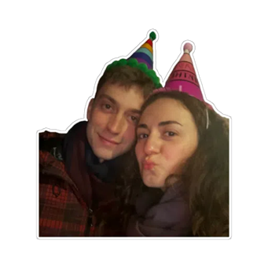
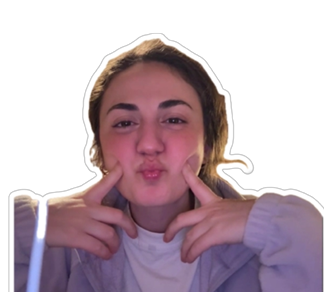

💖
Ken, what kind of Barbie do you unlock today?
Answer honestly, Ken. Barbie notices the details.
Today

Hi Ken. 💗
This is a tiny 24-hour vibe check. You’re not being graded like homework —
Barbie is just deciding what energy she’s serving you today 😌
🎀 One minute. One mood. Don’t fumble, Ken.
🎲 5 daily-ish questions
🫧 Some answers are… risky in disguise
💗 Barbie can be Cute or Fasti (or… almost)
Reminder: teasing is allowed. But making Barbie feel small? That’s how you summon Fasti Barbie.
💗 Be honest. Barbie can tell when you’re bluffing.
Question

✨ Barbie has decided. Don’t argue with the glitter.
💞 Result
Today Barbie is…